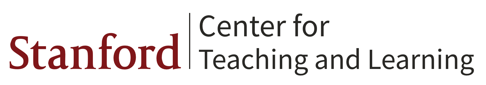

Bidipta Sarkar

I am a senior undergraduate at Stanford University majoring in computer science (AI track). I've been a member of Professor Dorsa Sadigh's ILIAD lab since my sophomore year.
I am interested in creating AI agents that can interact with their environment and safely work alongside humans and other autonomous agents. My research broadly spans three subfields of computer science:
• Multi-Agent Reinforcement Learning: Enabling independently trained agents to cooperate on a common task and form conventions.
• Vision: Capturing meaningful information about an agent's environment from sensors.
• Graphics: Simulating environments while balancing speed and realism.
Publications
Physically Grounded Vision-Language Models for Robotic Manipulation
Jensen Gao, Bidipta Sarkar, Fei Xia, Ted Xiao, Jiajun Wu, Brian Ichter, Anirudha Majumdar, Dorsa Sadigh
Under review

Diverse Conventions for Human-AI Collaboration
Bidipta Sarkar, Andy Shih, Dorsa Sadigh
Under review

An Extensible, Data-Oriented Architecture for High-Performance, Many-World Simulation
Brennan Shacklett, Luc Guy Rosenzweig, Zhiqiang Xie, Bidipta Sarkar, Andrew Szot, Erik Wijmans, Vladlen Koltun, Dhruv Batra, Kayvon Fatahalian
Transactions on Graphics 2023
Paper / Website / RL Environments / Blog / Colab


Other Projects
Temporally and Spatially Novel Video Frame Synthesis using 4D Video Autoencoder
Bidipta Sarkar, Xinyi Wang, Kathy Yu
CS231n Final Project, Spring 2022
(Won Best Project Poster Award)
Report / Poster / CS231n Tweet / Code
Simulating Food Interactions with Material Point Methods in Houdini
CS348C Final Project, Winter 2022
Report / Houdini File / Video


Virtual Hand Interactions with ARKit
CS231a Final Project, Winter 2022
Report / Code / Demo Video
The Guardian
CS148 Final Project, Fall 2022
Report / Final Image / View 2 / No Material / Blend File


{kind=link}
{kind=link}
Teaching and Outreach
Stanford Center for Teaching and Learning CS Tutor

Tau Beta Pi Mentor

Section Leader (CS 106A and 106B)